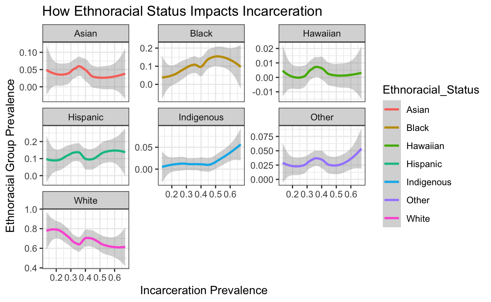

I will be investigating whether the states with the highest incarceration rates are also the states with the most racial diversity.
Introduction
Ever since the War On Drugs in the late 20th century, mass incarceration has been rapidly growing issue in the United States. According to the American Civil Liberties Union, roughly 25% of the entire world’s prison population resides in the United States even though the United States only holds about 5% of the world’s population (American Civil Liberties Union, “Mass Incarceration”, web). The list of reasons why mass incarceration is so problematic in the United States is endless, but I can’t help but think that racial bias is one of the most significant contributors. According to census.gov, 76.3% of all US citizens are white and 13.4% of all US citizens are black, meaning that there are nearly six times more white people in the United States than black people (U.S. Census Bureau, QuickFacts, Race and Hispanic Origin, web). In spite of the fact that there are nearly six times more white people than black people in the United States, black males are six times more likely to end up incarcerated during their lifetime than white males (The Sentencing Project, Criminal Justice Facts, web). In this paper, I will be investigating whether the states with the highest incarceration rates are also the states with the lowest prevalence of white, non-Hispanic people. I also would like to examine which minority groups are most prevalent in the states with the highest incarceration rates.
Dataset I
The main dataset I’m interested in analyzing provides records of how many people lived in each state, how many people were incarcerated in each state, and how many violent and property crimes were committed in each state from 2001-2016. For the sake of this project I am primarily interested in compiling data regarding the state populations and prisoner counts per state in 2016 because the 2016 data is more likely to reflect the trends of 2021 data than the earlier datasets.
For the sake of my project, I need the tidyverse library, the ggplot library, and the numbers library, so before loading the datasets, I’ll load the libraries.
Now, I’ll load the incarceration dataset.
incarceration_dataset <- read.csv("../../_data/crime_and_incarceration_by_state.csv")
In order to see how much data I’ll be working with, I’ll use the dim() function and to use colnames() to see what my variables are.
dim(incarceration_dataset)
[1] 816 17colnames(incarceration_dataset)
[1] "jurisdiction" "includes_jails"
[3] "year" "prisoner_count"
[5] "crime_reporting_change" "crimes_estimated"
[7] "state_population" "violent_crime_total"
[9] "murder_manslaughter" "rape_legacy"
[11] "rape_revised" "robbery"
[13] "agg_assault" "property_crime_total"
[15] "burglary" "larceny"
[17] "vehicle_theft" By using the dim() and colnames() functions, I can conclude that my dataset has 816 entries and 17 variables. Of the 17 variables, nine of them pertain to crime rates of specific crimes, one pertains to the jurisdiction that the data originates from, one pertains to whether jail data is included or not, one pertains to the year the data was collected, one pertains to the amount of prisoners in each state, one pertains to whether crime reporting has changed, one indicates to whether the values are estimated or not, one pertains to state population of the corresponding year, one pertains to the total amount of violent crimes committed in the corresponding year, four pertain to the prevalence of four specific violent crimes, one pertains to the amount of property crimes committed in the corresponding year, and three pertain to the prevalence of three specific property crimes. I will use select to remove the crime_reporting_change column because I’m only interested in looking at the data from 2016 and the nine columns pertaining to the crimes that were committed because none of these variables are relevant to my research question. I’ll also provide a tibble with the narrowed-down dataset.
incarceration_dataset %>%
select(jurisdiction:prisoner_count, crimes_estimated:state_population) %>%
as_tibble(incarceration_dataset)
# A tibble: 816 × 6
jurisdiction includes_jails year prisoner_count crimes_estimated
<chr> <chr> <int> <int> <chr>
1 FEDERAL False 2001 149852 ""
2 ALABAMA False 2001 24741 "False"
3 ALASKA True 2001 4570 "False"
4 ARIZONA False 2001 27710 "False"
5 ARKANSAS False 2001 11489 "False"
6 CALIFORNIA False 2001 157142 "False"
7 COLORADO False 2001 17278 "False"
8 CONNECTICUT True 2001 17507 "False"
9 DELAWARE True 2001 6841 "False"
10 FLORIDA False 2001 72404 "False"
# … with 806 more rows, and 1 more variable: state_population <dbl>Next, I’ll use filter() to remove rows that don’t showcase data from 2016 because I’m only interested in the most recent data from the dataset. I’ll also use filter to remove the rows labeled as “FEDERAL” because the “FEDERAL” rows have missing data.
incarceration_dataset %>%
select(jurisdiction:prisoner_count, crimes_estimated:state_population) %>%
filter(jurisdiction != "FEDERAL" & year == "2016") %>%
as_tibble(incarceration_dataset)
# A tibble: 50 × 6
jurisdiction includes_jails year prisoner_count crimes_estimated
<chr> <chr> <int> <int> <chr>
1 ALABAMA False 2016 23745 False
2 ALASKA True 2016 4378 False
3 ARIZONA False 2016 42248 False
4 ARKANSAS False 2016 15833 False
5 CALIFORNIA False 2016 129416 False
6 COLORADO False 2016 19486 False
7 CONNECTICUT True 2016 15040 False
8 DELAWARE True 2016 6334 False
9 FLORIDA False 2016 98010 False
10 GEORGIA False 2016 53433 False
# … with 40 more rows, and 1 more variable: state_population <dbl>Just by looking at the tibble, it is unclear whether crimes_estimated() is false for every state. With that being said, I’ll use filter to check.
incarceration_dataset %>%
select(jurisdiction:prisoner_count, crimes_estimated:state_population) %>%
filter(jurisdiction != "FEDERAL" & year == "2016") %>%
filter(crimes_estimated != "False")%>%
as_tibble(incarceration_dataset)
# A tibble: 0 × 6
# … with 6 variables: jurisdiction <chr>, includes_jails <chr>,
# year <int>, prisoner_count <int>, crimes_estimated <chr>,
# state_population <dbl>The tibble came back empty, so I can conclude that the values are exact for each state. Now, I can use select() to remove the crimes_estimated column. I’ll also remove the year column because all of the data I’m working with is from the same year now.
incarceration_dataset %>%
select(jurisdiction:prisoner_count, crimes_estimated:state_population) %>%
filter(jurisdiction != "FEDERAL" & year == "2016") %>%
select(jurisdiction:includes_jails, prisoner_count, state_population) %>%
as_tibble(incarceration_dataset)
# A tibble: 50 × 4
jurisdiction includes_jails prisoner_count state_population
<chr> <chr> <int> <dbl>
1 ALABAMA False 23745 4860545
2 ALASKA True 4378 741522
3 ARIZONA False 42248 6908642
4 ARKANSAS False 15833 2988231
5 CALIFORNIA False 129416 39296476
6 COLORADO False 19486 5530105
7 CONNECTICUT True 15040 3587685
8 DELAWARE True 6334 952698
9 FLORIDA False 98010 20656589
10 GEORGIA False 53433 10313620
# … with 40 more rowsFinding Incarceration Rate For Each State
To really get a feel for how high the incarceration rate is in each state, I have use mutate() to divide prisoner_count by state_population, but first, I need to convert the state_population column into integer format.
incarceration_dataset %>%
select(jurisdiction:prisoner_count, crimes_estimated:state_population) %>%
filter(jurisdiction != "FEDERAL" & year == "2016") %>%
select(jurisdiction:includes_jails, prisoner_count, state_population) %>%
mutate(state_population=as.integer(state_population)) %>%
as_tibble(incarceration_dataset)
# A tibble: 50 × 4
jurisdiction includes_jails prisoner_count state_population
<chr> <chr> <int> <int>
1 ALABAMA False 23745 4860545
2 ALASKA True 4378 741522
3 ARIZONA False 42248 6908642
4 ARKANSAS False 15833 2988231
5 CALIFORNIA False 129416 39296476
6 COLORADO False 19486 5530105
7 CONNECTICUT True 15040 3587685
8 DELAWARE True 6334 952698
9 FLORIDA False 98010 20656589
10 GEORGIA False 53433 10313620
# … with 40 more rowsWith the state_population column in integer format, I can now use mutate() to divide the prisoner_count column by the state_population column and formed a new column labeled as percent_incarcerated. I also used mutate to multiply the percent_incarcerated by 100 somthe correct percentage would be shown.
incarceration_dataset %>%
filter(jurisdiction != "FEDERAL" & year == "2016") %>%
select(jurisdiction:includes_jails, prisoner_count, state_population) %>%
rename("State"=jurisdiction) %>%
mutate(state_population=as.integer(state_population)) %>%
mutate(percent_incarcerated=prisoner_count/state_population) %>%
mutate(percent_incarcerated=percent_incarcerated*100) %>%
as_tibble(incarceration_dataset)
# A tibble: 50 × 5
State includes_jails prisoner_count state_population
<chr> <chr> <int> <int>
1 ALABAMA False 23745 4860545
2 ALASKA True 4378 741522
3 ARIZONA False 42248 6908642
4 ARKANSAS False 15833 2988231
5 CALIFORNIA False 129416 39296476
6 COLORADO False 19486 5530105
7 CONNECTICUT True 15040 3587685
8 DELAWARE True 6334 952698
9 FLORIDA False 98010 20656589
10 GEORGIA False 53433 10313620
# … with 40 more rows, and 1 more variable:
# percent_incarcerated <dbl>Now that I have all the data I need, I’ll use select() to remove the prisoner_count and incarcerated_percentage columns and I’ll save my cleaned data as cleaned_incarceration_dataset.
incarceration_1 <- filter(incarceration_dataset, jurisdiction != "FEDERAL" & year == "2016")
incarceration_2 <- select(incarceration_1, jurisdiction:includes_jails, prisoner_count, state_population)
incarceration_3 <- mutate(incarceration_2, state_population=as.integer(state_population))
incarceration_4 <- mutate(incarceration_3, percent_incarcerated=prisoner_count/state_population)
incarceration_5 <- mutate(incarceration_4, percent_incarcerated=percent_incarcerated*100)
cleaned_incarceration_dataset <- select(incarceration_5, jurisdiction:includes_jails, percent_incarcerated)
as_tibble(cleaned_incarceration_dataset)
# A tibble: 50 × 3
jurisdiction includes_jails percent_incarcerated
<chr> <chr> <dbl>
1 ALABAMA False 0.489
2 ALASKA True 0.590
3 ARIZONA False 0.612
4 ARKANSAS False 0.530
5 CALIFORNIA False 0.329
6 COLORADO False 0.352
7 CONNECTICUT True 0.419
8 DELAWARE True 0.665
9 FLORIDA False 0.474
10 GEORGIA False 0.518
# … with 40 more rowsDatasets II and III
As I said earlier, the purpose of my research is to figure out whether states with lowest quantities of white, non-Hispanic people have the highest incarceration rates and which minority groups are most prevalent in states with high incarceration rates. My first dataset didn’t contain any data regarding race or ethnicity, so I’m including two more datasets. One of the additional datasets contains records of how many non-hispanic people of each race reside in each state and the other additional dataset contains records of how many hispanic people reside in each state.
First I’ll load both datasets and use merge() to combine them.
non_hispanic_race_by_state <- read_csv("../../_data/csvDataNonHispanic.csv")
hispanic_by_state <- read_csv("../../_data/csvDataHispanic.csv")
ethnoracial_dataset=merge(non_hispanic_race_by_state, hispanic_by_state)
Now, I’ll use colnames() to see whether any columns need to be removed
colnames(ethnoracial_dataset)
[1] "State" "WhiteNonHispanicPerc"
[3] "BlackNonHispanicPerc" "IndianNonHispanicPerc"
[5] "AsianNonHispanicPerc" "HawaiianNonHispanicPerc"
[7] "OtherNonHispanicPerc" "HispanicTotal"
[9] "Total" "HispanicPerc" By using colnames, I can see that I can can use select() eliminate the “HispanicTotal” and “Total” columns since I’m only interested in the state columns that end in “Perc”.
ethnoracial_dataset %>%
select(State:OtherNonHispanicPerc, HispanicPerc) %>%
as_tibble(ethnoracial_dataset)
# A tibble: 50 × 8
State WhiteNonHispanicPerc BlackNonHispanic… IndianNonHispan…
<chr> <dbl> <dbl> <dbl>
1 Alabama 0.655 0.265 0.0047
2 Alaska 0.606 0.031 0.144
3 Arizona 0.547 0.0421 0.0392
4 Arkansas 0.724 0.152 0.0059
5 California 0.372 0.0552 0.0036
6 Colorado 0.681 0.0395 0.0054
7 Connecticut 0.669 0.0991 0.0016
8 Delaware 0.623 0.217 0.003
9 Florida 0.539 0.153 0.002
10 Georgia 0.527 0.312 0.0019
# … with 40 more rows, and 4 more variables:
# AsianNonHispanicPerc <dbl>, HawaiianNonHispanicPerc <dbl>,
# OtherNonHispanicPerc <dbl>, HispanicPerc <dbl>Now, I’ll use rename() to rename the columns becasue they take up a lot of space. I’ll also rename the “State” column as jurisdiction for the sake of being able to merge this dataset with the cleaned_incarceration_dataset.
ethnoracial_dataset%>%
select(State:OtherNonHispanicPerc, HispanicPerc) %>%
rename("jurisdiction" = State, "White" = WhiteNonHispanicPerc, "Black" = BlackNonHispanicPerc, "Indigenous"= IndianNonHispanicPerc, "Asian" = AsianNonHispanicPerc, "Hawaiian" = HawaiianNonHispanicPerc, "Other" = OtherNonHispanicPerc, "Hispanic" = HispanicPerc) %>%
as_tibble(ethnoracial_dataset)
# A tibble: 50 × 8
jurisdiction White Black Indigenous Asian Hawaiian Other
<chr> <dbl> <dbl> <dbl> <dbl> <dbl> <dbl>
1 Alabama 0.655 0.265 0.0047 0.0134 0.0003 0.0187
2 Alaska 0.606 0.031 0.144 0.0609 0.0122 0.0749
3 Arizona 0.547 0.0421 0.0392 0.0321 0.0018 0.0243
4 Arkansas 0.724 0.152 0.0059 0.015 0.0029 0.0249
5 California 0.372 0.0552 0.0036 0.143 0.0036 0.0328
6 Colorado 0.681 0.0395 0.0054 0.0311 0.0014 0.0267
7 Connecticut 0.669 0.0991 0.0016 0.0448 0.0002 0.0247
8 Delaware 0.623 0.217 0.003 0.0383 0.0003 0.0263
9 Florida 0.539 0.153 0.002 0.0268 0.0005 0.0227
10 Georgia 0.527 0.312 0.0019 0.0395 0.0005 0.0236
# … with 40 more rows, and 1 more variable: Hispanic <dbl>Now, I will relabel all of the State names so that they’re in all caps format, like the state names in my incarceration dataset, and save my cleaned dataset as cleaned_ethnoracial_dataset. If I don’t rename the states using all caps, the datasets won’t merge properly because r doesn’t have the ability to understand that “ALABAMA” and “Alabama” are the same word.
ethnoracial_1 <- select(ethnoracial_dataset, State:OtherNonHispanicPerc, HispanicPerc)
ethnoracial_2 <- rename(ethnoracial_1, "jurisdiction" = State, "White" = WhiteNonHispanicPerc, "Black" = BlackNonHispanicPerc, "Indigenous"= IndianNonHispanicPerc, "Asian" = AsianNonHispanicPerc, "Hawaiian" = HawaiianNonHispanicPerc, "Other" = OtherNonHispanicPerc, "Hispanic" = HispanicPerc)
cleaned_ethnoracial_dataset <- mutate(ethnoracial_2, jurisdiction = case_when(
jurisdiction == "Alabama" ~ "ALABAMA",
jurisdiction == "Alaska" ~ "ALASKA",
jurisdiction == "Arizona" ~ "ARIZONA",
jurisdiction == "Arkansas" ~ "ARKANSAS",
jurisdiction == "California" ~ "CALIFORNIA",
jurisdiction == "Colorado" ~ "COLORADO",
jurisdiction == "Connecticut" ~ "CONNECTICUT",
jurisdiction == "Delaware" ~ "DELAWARE",
jurisdiction == "Florida" ~ "FLORIDA",
jurisdiction == "Georgia" ~ "GEORGIA",
jurisdiction == "Hawaii" ~ "HAWAII",
jurisdiction == "Idaho" ~ "IDAHO",
jurisdiction == "Illinois" ~ "ILLINOIS",
jurisdiction == "Indiana" ~ "INDIANA",
jurisdiction == "Iowa" ~ "IOWA",
jurisdiction == "Kansas" ~ "KANSAS",
jurisdiction == "Kentucky" ~ "KENTUCKY",
jurisdiction == "Louisiana" ~ "LOUISIANA",
jurisdiction == "Maine" ~ "MAINE",
jurisdiction == "Maryland" ~ "MARYLAND",
jurisdiction == "Massachusetts" ~ "MASSACHUSETTS",
jurisdiction == "Michigan" ~ "MICHIGAN",
jurisdiction == "Minnesota" ~ "MINNESOTA",
jurisdiction == "Mississippi" ~ "MISSISSIPPI",
jurisdiction == "Missouri" ~ "MISSOURI",
jurisdiction == "Montana" ~ "MONTANA",
jurisdiction == "Nebraska" ~ "NEBRASKA",
jurisdiction == "Nevada" ~ "NEVADA",
jurisdiction == "New Hampshire" ~ "NEW HAMPSHIRE",
jurisdiction == "New Jersey" ~ "NEW JERSEY",
jurisdiction == "New Mexico" ~ "NEW MEXICO",
jurisdiction == "New York" ~ "NEW YORK",
jurisdiction == "North Carolina" ~ "NORTH CAROLINA",
jurisdiction == "North Dakota" ~ "NORTH DAKOTA",
jurisdiction == "Ohio" ~ "OHIO",
jurisdiction == "Oklahoma" ~ "OKLAHOMA",
jurisdiction == "Oregon" ~ "OREGON",
jurisdiction == "Pennsylvania" ~ "PENNSYLVANIA",
jurisdiction == "Rhode Island" ~ "RHODE ISLAND",
jurisdiction == "South Carolina" ~ "SOUTH CAROLINA",
jurisdiction == "South Dakota" ~ "SOUTH DAKOTA",
jurisdiction == "Tennessee" ~ "TENNESSEE",
jurisdiction == "Texas" ~ "TEXAS",
jurisdiction == "Utah" ~ "UTAH",
jurisdiction == "Vermont" ~ "VERMONT",
jurisdiction == "Virginia" ~ "VIRGINIA",
jurisdiction == "Washington" ~ "WASHINGTON",
jurisdiction == "West Virginia" ~ "WEST VIRGINIA",
jurisdiction == "Wisconsin" ~ "WISCONSIN",
jurisdiction == "Wyoming" ~ "WYOMING"))
as_tibble(cleaned_ethnoracial_dataset)
# A tibble: 50 × 8
jurisdiction White Black Indigenous Asian Hawaiian Other
<chr> <dbl> <dbl> <dbl> <dbl> <dbl> <dbl>
1 ALABAMA 0.655 0.265 0.0047 0.0134 0.0003 0.0187
2 ALASKA 0.606 0.031 0.144 0.0609 0.0122 0.0749
3 ARIZONA 0.547 0.0421 0.0392 0.0321 0.0018 0.0243
4 ARKANSAS 0.724 0.152 0.0059 0.015 0.0029 0.0249
5 CALIFORNIA 0.372 0.0552 0.0036 0.143 0.0036 0.0328
6 COLORADO 0.681 0.0395 0.0054 0.0311 0.0014 0.0267
7 CONNECTICUT 0.669 0.0991 0.0016 0.0448 0.0002 0.0247
8 DELAWARE 0.623 0.217 0.003 0.0383 0.0003 0.0263
9 FLORIDA 0.539 0.153 0.002 0.0268 0.0005 0.0227
10 GEORGIA 0.527 0.312 0.0019 0.0395 0.0005 0.0236
# … with 40 more rows, and 1 more variable: Hispanic <dbl>Now that all of my datasets are in cleaned format, I can use merge to get my full dataset.
full_dataset=merge(cleaned_incarceration_dataset, cleaned_ethnoracial_dataset)
as_tibble(full_dataset)
# A tibble: 50 × 10
jurisdiction includes_jails percent_incarcerated White Black
<chr> <chr> <dbl> <dbl> <dbl>
1 ALABAMA False 0.489 0.655 0.265
2 ALASKA True 0.590 0.606 0.031
3 ARIZONA False 0.612 0.547 0.0421
4 ARKANSAS False 0.530 0.724 0.152
5 CALIFORNIA False 0.329 0.372 0.0552
6 COLORADO False 0.352 0.681 0.0395
7 CONNECTICUT True 0.419 0.669 0.0991
8 DELAWARE True 0.665 0.623 0.217
9 FLORIDA False 0.474 0.539 0.153
10 GEORGIA False 0.518 0.527 0.312
# … with 40 more rows, and 5 more variables: Indigenous <dbl>,
# Asian <dbl>, Hawaiian <dbl>, Other <dbl>, Hispanic <dbl>Column Definitions For The Full Dataset
jurisdiction: The state name
includes_jails: Indicates whether or not the jail population is included in the taken into consideration
percent_incarcerated: Indicates what percentage of people are incarcerated in each state
White: Non-Hispanic and White
Black: Non-Hispanic and Black
Indigenous: Non-Hispanic and Indigenous American
Asian: Non-Hispanic and Asian
Hawaiian: Non-Hispanic and Hawaiian
Other: Non-Hispanic and Other Race
Hispanic: Hispanic and Any Race
The Visualizations
full_dataset %>%
pivot_longer(cols=White:Hispanic,
names_to = "Ethnoracial_Status",
values_to = "Ethnoracial_Prevalence") %>%
ggplot(aes(percent_incarcerated, Ethnoracial_Prevalence)) +
geom_smooth(aes(color=Ethnoracial_Status)) +
theme_bw() + labs(title = "How Ethnoracial Status Impacts Incarceration", x = "Incarceration Prevalence", y = "Ethnoracial Group Prevalence") + facet_wrap(vars(Ethnoracial_Status), scales = "free_y")

The first component of my research question is “Are the states with lowest prevalence of white, non-Hispanic people the states with the lowest incarceration rates?” and my answer is yes. The facet that’s labeled as “White”, the line shows a negative correlation, meaning that as the incarceration rate increases, the prevalence of white, non-hispanic people decreases. The second component of my research question is “Which minority groups are most common in the states with the highest incarceration rates?”. My findings suggest that non-Hispanic black people, non-Hispanic indigenous Americans, non-Hispanic people who identify as an unspecified race are more common in states with high incarceration rates than in states with low incarceration rates because lines in the facets associated with these three groups show an obvious positive correlation. A positive correlation indicates that as the prevalence of the indicated ethnoracial group increases, the incarceration rate increases too. High incarceration rates are also common in the states with the most Hispanic people, but to a slightly lesser extent because the line in the “Hispanic” facet has a less obvious positive correlation. There was no correlation shown between ethnoracial group prevalence and incarceration prevalence for non-Hispanic Asian and non-Hispanic Hawaiian people, which means that the states with high incarceration rates aren’t any more or less likely to have high Asian and Hawaiian populations than than states with low incarceration rates.
The visualization I chose to answer my research question is a multifaceted geom_smooth plot that provides a depiction how the racial/ethnic prevalence in each state correlates with the incarceration rate. The multiple facets also allowed me to answer my research question without The reason why I chose to use geom_smooth instead of geom_point is because geom_smooth plot provides a clearer depiction of the differences in prevalence of each ethnoracial group in the states with high vs low incarceration rates than geom_point. I used a multifaceted plot for my visual because the prevalence of each race/ethnicity in states with higher vs lower incarceration rates is a lot more obvious and I can use the free_y option to take the different prevalence of each race/ethnicity in general into account. When I tried the single-faceted approach, the lines representing every racial/ethnic category except for white overlapped with each other and were almost flat.
Another option I considered resorting to was making seven boxplots. The first boxplot would have involved the incarceration data from the 10 states with the largest non-Hispanic white populations, the second boxplot would have involved the incarceration data from the 10 states with the largest non-Hispanic black populations, the third boxplot would have involved the incarceration data from the 10 states with the largest non-Hispanic indigenous populations, the fourth boxplot would have involved the incarceration data from the 10 states with the largest non-Hispanic Asian populations, the fifth boxplot would have involved the incarceration data from the 10 states with the largest non-Hispanic Hawaiian populations, the sixth boxplot would have involved the incarceration data from the 10 states with the largest non-Hispanic other race populations, and the seventh boxplot would have involved the incarceration data from the 10 states with the largest Hispanic populations. When I tried the boxplot approach, I was successful at making the seven boxplots, but the boxplots were too large to compare to each other and there isn’t a way to make a multi-faceted plot involving seven different slices of data, so I did not use that approach.
Reflection
There was a lot of trial and error involved in combining datasets. Originally, my decision was to only include data about white prevalence from worldpopulationreview.com in each state without adding a second or third dataset. I was successful at adding the data using mutate(), case_when(), and seperate(), but that process took at least an hour of two, copying the code into later steps was a nightmare. There was also a part of me that was curious about whether some minority groups are more tied to high incarceration rates than others, so I had to change my approach. When I concluded that adding .csv files with race and ethnicity data for each state was the best approach, I tried combining the .csv files before cleaning the data. This approach worked just fine when I combined the two race and ethnicity datasets with each other, but when I tried combining the new datasets with my original incarceration dataset, it was nearly impossible for me to clean the new combined dataset becasue it had over 40,000 rows and one of the two columns that listed state names listed each state name at least 50 times. Ultimately, my decision was to clean the incarceration dataset first, combine the non_hispanic_race_by_state and hispanic_by_state datasets into the ethnoracial_dataset, and clean the ethnoracial_dataset before combining all the datasets. Even though the final tactic worked, the process was still somewhat tedious because in order for me to successfully merge all the data I needed, I had to rename the column listing all the state names and I had to use mutate() and case_when() to re-label all of the state names in all caps format. Although the process of combining three datasets made my project more difficult and time consuming, I didn’t realize that ignoring the includes_jails column could make my findings inaccurate and/or biased. For the sake of time, I decided to ignore the includes_jails() aspect of my dataset, but if I had more time, I would have taken the includes_jails column into consideration. I think it would also be worth investigating whether countries outside the US with a lot of diversity are also prone to high incarceration rates.
Conclusion
For the sake of this project, my purpose was to figure out whether the states with the lowest incarceration rates have more white non-Hispanic people than the states with the highest incarceration rates and to figure out which minority groups are most common in the states with high incarceration rates. By combining three datasets and forming a multifaceted geom_smooth() plot, I was able to conclude that the states with the least white non-Hispanic people are also than the states with the highest incarceration rates. I was also able to figure out that the only minority groups that aren’t disproportionately impacted by the issue of mass incarceration are Asian Americans and Hawaiian Natives. As difficult as this project was, I’m glad that I took it on because this project really opened my eyes to how problematic racism really is in the United States.
Bibliography
“Mass Incarceration.” American Civil Liberties Union. Web.
“U.S. Census Bureau QUICKFACTS: United States.” United States Census Bureau. Web. 30 Aug. 2021.
“Criminal Justice Facts.” The Sentencing Project. 03 June 2021. Web. 30 Aug. 2021.
Datasets
Incarceration Dataset: Correa, Chris. “Crime and Incarceration in the United States.” Kaggle. 12 Oct. 2018. Web. 30 Aug. 2021.
Non-Hispanic Race By State Dataset: “US States by Race 2021.” World Population Review. Web. 30 Aug. 2021.
Hispanic By State Dataset: “Hispanic Population by State 2021.” World Population Review. Web. 30 Aug. 2021.